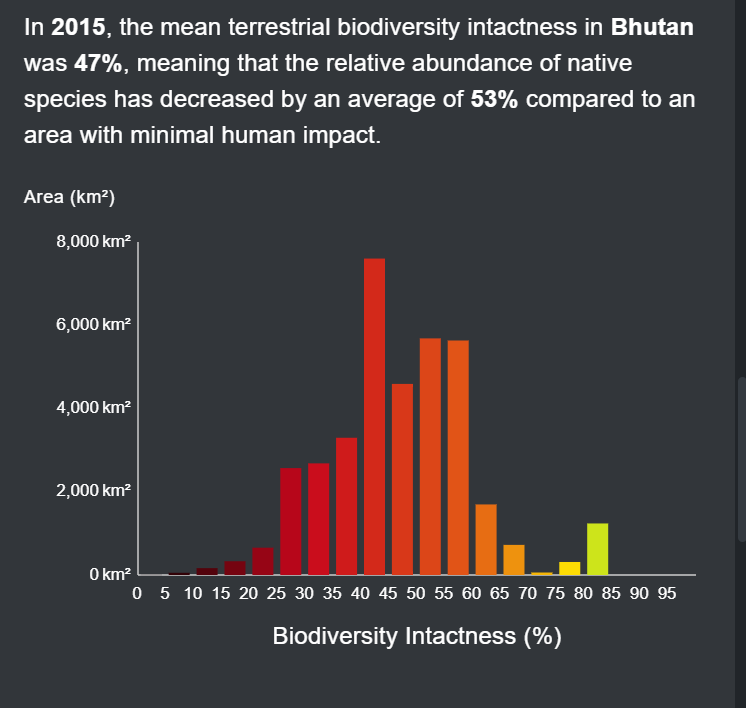
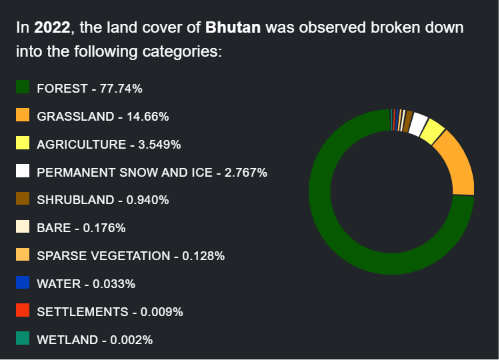
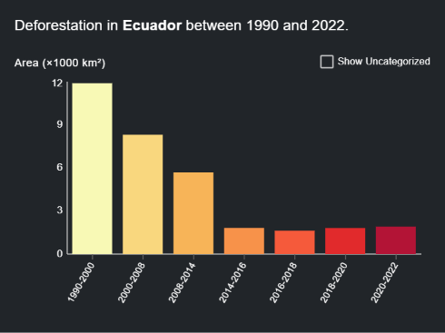
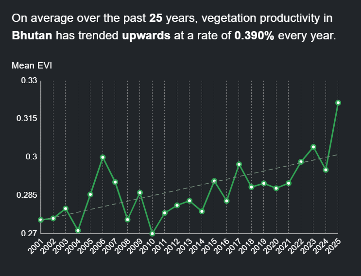
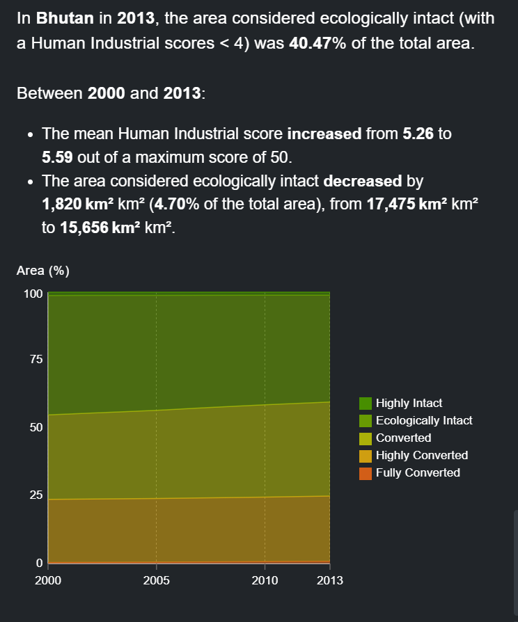
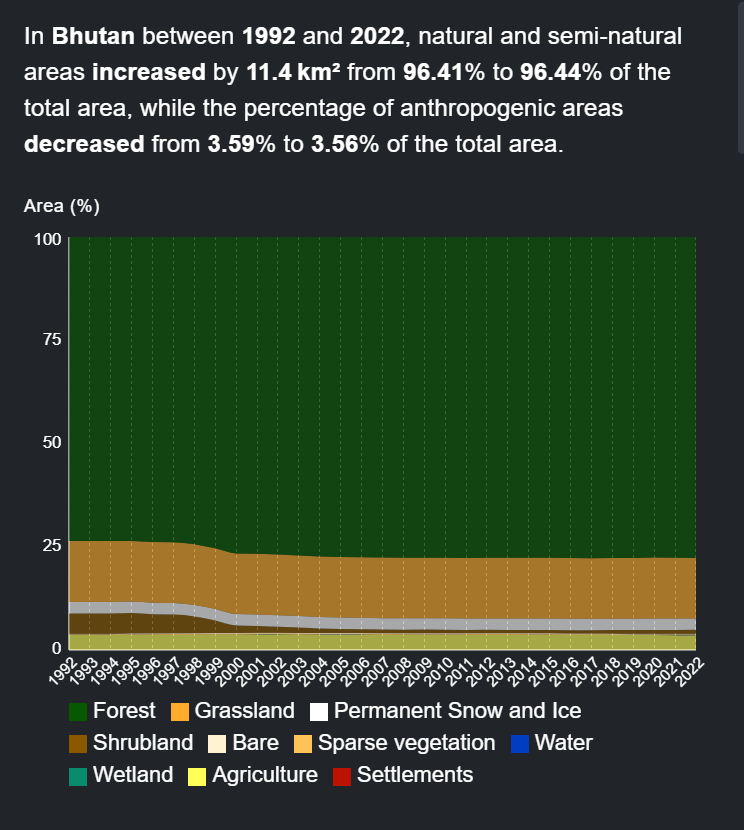

Añadir tus Propias Métricas Personalizadas a tu Espacio de Trabajo¶
Esta traducción ha sido generada por una IA y puede contener errores.
La plataforma pública de UNBL actualmente ofrece once métricas dinámicas por defecto (consulte «¿Qué métricas dinámicas están disponibles para mi país?»).
Los espacios de trabajo de UNBL permiten a los usuarios configurar sus propias métricas personalizadas para realizar cálculos en tiempo real y mostrar estadísticas zonales para sus áreas de interés, derivadas de sus propias capas de datos geoespaciales cargadas.
La configuración de una métrica personalizada en un espacio de trabajo sigue 5 pasos. Cada paso se describe en detalle en esta sección.
Paso 1: Cargar un lugar¶
Las métricas se muestran en UNBL mediante la selección de un lugar específico que define el área de interés para la cual se calculan las estadísticas zonales. Por lo tanto, es necesario cargar un lugar en su espacio de trabajo para el que desee ver la métrica personalizada. Para conocer los pasos detallados sobre cómo cargar un lugar en su espacio de trabajo, consulte «¿Cómo añado lugares?».
Paso 2: Cargar una capa raster en formato GeoTIFF¶
Para crear una métrica personalizada, es necesario cargar una capa raster para la que desee ver estadísticas zonales. Los espacios de trabajo de UNBL solo admiten cálculos de métricas utilizando capas cargadas en el espacio de trabajo mediante la opción «Carga de archivo GeoTIFF». Para conocer los pasos detallados sobre cómo cargar una capa con esta opción, consulte «¿Cómo cargo capas raster en formato GeoTIFF?».
Para que una métrica personalizada funcione correctamente en UNBL, es necesario tener en cuenta los siguientes requisitos técnicos previos para las capas GeoTIFF cargadas:
-
Los GeoTIFF pueden representar cualquier forma de datos continuos o categóricos, pero los valores de píxel deben ser de tipo entero o flotante;
-
Se recomienda que para datos categóricos, los GeoTIFF no almacenen más de 25 clases enteras discretas; un número mayor de clases dificulta la legibilidad de los gráficos de métricas;
-
Las estadísticas zonales para su métrica personalizada solo se pueden calcular para capas GeoTIFF que tengan cobertura de datos en el lugar que ha cargado. Si selecciona un lugar en la vista de mapa de UNBL cuya extensión espacial no se superpone en absoluto con la extensión espacial de la capa GeoTIFF cargada para la que configuró la métrica personalizada, la métrica devolverá un gráfico de datos vacío.
-
Es posible configurar una métrica de serie temporal que muestre cambios a lo largo del tiempo para varias capas GeoTIFF; en estos casos, todas las capas GeoTIFF deben tener los mismos valores de atributos, como rangos de valores mín./máx. para datos continuos, o definiciones de categorías (es decir, la configuración de la leyenda) para datos categóricos.
Los usuarios que deseen configurar métricas personalizadas para datos de polígonos vectoriales deben primero convertirlos a formato raster GeoTIFF mediante técnicas de rasterización. Ejemplos de técnicas de rasterización se pueden encontrar en la documentación en línea de QGIS, PyGIS y rdrr.io. Para minimizar los errores en los cálculos de métricas que pueden introducirse mediante el proceso de rasterización de datos vectoriales, considere:
-
Si los datos vectoriales solo contienen nombres de atributos de texto, se debe añadir un nuevo campo entero antes de la rasterización y asignar un número único a cada clase para datos categóricos; este campo entero debe usarse para asignar valores de píxel durante la rasterización;
-
Convertir los datos vectoriales a un sistema de referencia de coordenadas proyectadas consistente, como WGS84 (EPSG: 4326), antes de la rasterización;
-
Los polígonos superpuestos deben resolverse mediante prioridad de grabado de píxeles durante la rasterización — por ejemplo, los enfoques de «último pintado» o «gana el valor más alto»;
-
Elegir una resolución raster apropiada que considere los compromisos entre minimizar los errores de borde mediante la conversión de límites de polígonos a píxeles y minimizar el tamaño del archivo (las capas cargadas en su espacio de trabajo de UNBL mediante la opción «Carga de archivo GeoTIFF» no pueden ser mayores de 1000 MB).
Paso 3: Crear una métrica¶
Crear una métrica implica elegir qué capas GeoTIFF del espacio de trabajo se deben usar para calcular estadísticas zonales. Para crear una métrica:
-
Haga clic en el botón «Home» en la página de administración de su espacio de trabajo para expandir el menú desplegable. Seleccione «Metrics».
-
Haga clic en el botón «CREATE NEW METRIC» que aparece.
-
En la página de nueva métrica, rellene la siguiente información:
a) Title: El nombre de su métrica. Debe describir lo que muestra el conjunto de datos para el que está configurando la métrica. Puede ser el mismo que el de la capa GeoTIFF cargada.
b) Metric slug: Un slug es un identificador único para la métrica dentro de su espacio de trabajo. No puede tener múltiples métricas dentro de su espacio de trabajo con el mismo slug. Solo debe contener letras, dígitos y guiones («-»). Puede usar el botón «GENERATE SLUG NAME» para generar un identificador único basado en el título de métrica proporcionado.
c) Metric data source(s): Elija una capa GeoTIFF cargada en su espacio de trabajo de la lista desplegable. Para métricas personalizadas que muestran cambios a lo largo del tiempo, tiene la opción de seleccionar múltiples capas GeoTIFF usando el botón «ADD ADDITIONAL DATA SOURCE». Seleccione esta opción solo si tiene una serie de capas GeoTIFF con un esquema de atributos consistente, como rangos de valores mín./máx. para datos continuos, o definiciones de categorías (es decir, una configuración de leyenda) para datos categóricos.
d) Histogram bins: Esta opción aparece como un campo obligatorio si seleccionó una capa GeoTIFF con una categoría de datos continuos. La métrica usará un histograma para calcular estadísticas zonales para capas de datos continuos. Por lo tanto, es necesario especificar el número de intervalos que tendrá el histograma calculado para la capa de datos continuos. Los intervalos también se conocen como clases. Dividen el rango de datos numéricos almacenados en la capa GeoTIFF en grupos de igual anchura. Elija un número que cree un número adecuado de intervalos de datos para el rango y la dispersión de sus datos. En la mayoría de los casos, entre 5 y 20 intervalos es óptimo, pero depende del rango de datos específico.
e) Calculate for place types (optional): Opcionalmente puede seleccionar el tipo de lugar para el que su métrica personalizada debe mostrar estadísticas. Esto es útil, por ejemplo, para una métrica que muestra la eutrofización costera que solo cubre lugares de la categoría marina. Sin embargo, si la capa de datos para la métrica no está diseñada para estar confinada a un área específica, este campo debe dejarse vacío.
f) Una vez especificados todos los parámetros, el botón «SAVE AND VIEW DETAILS» se iluminará en azul, siempre que toda la información introducida sea válida. Haga clic en este botón para configurar la métrica en su espacio de trabajo.
-
En la página de edición de métrica que aparece, active el botón «Published» para publicar la métrica.
{kind=link}
{kind=link}
Paso 4: Crear un widget¶
Una vez configurada la métrica personalizada, es necesario crear un widget para la métrica configurada. El widget configura cómo se visualizarán los datos de la métrica y qué información mostrará en la vista de mapa de UNBL. Para crear un widget:
-
Haga clic en el botón «Home» en la página de administración de su espacio de trabajo para expandir el menú desplegable. Seleccione «Widgets».
-
Haga clic en el botón «CREATE NEW WIDGET» que aparece.
-
En la página de nuevo widget, rellene la siguiente información:
a) Title: Idealmente, el nombre del widget debe ser el mismo que el nombre de la métrica configurada en el Paso 3. Esto asocia claramente el widget a su métrica.
b) Widget slug: Un slug es un identificador único para el widget dentro de su espacio de trabajo. Solo debe contener letras, dígitos y guiones («-»). Puede usar el botón «GENERATE SLUG NAME» para generar un identificador único basado en el título de métrica proporcionado. Idealmente, el slug del widget debe coincidir con el slug de la métrica del Paso 3.
c) Description (optional): Cree una descripción corta para su widget. Debe ser una descripción general de los datos que su métrica muestra en UNBL. Este campo es opcional.
d) Metric: Elija la métrica creada en el paso 3 para asociarla con el widget.
e) Widget Layer(s): Este campo especifica la capa de datos que se puede visualizar en la vista de mapa de UNBL junto con la métrica. Se rellena automáticamente con la capa GeoTIFF asociada a su métrica elegida. Es posible elegir capas adicionales para su inclusión desde el menú desplegable. Sin embargo, esto no se recomienda, a menos que existan capas adicionales en el espacio de trabajo que no se utilicen para calcular la métrica pero que sean útiles para añadir información geoespacial contextual.
f) Widget Chart: Determina qué tipo de gráfico se usará para visualizar las estadísticas de métricas para su lugar. La tabla a continuación ofrece un resumen de los tipos de gráficos disponibles según el tipo de widget, que se detecta automáticamente en función de a) si la capa GeoTIFF muestra datos categóricos (clases discretas) o datos continuos (rango de valores numéricos), y b) si se ha elegido una sola capa o múltiples capas (métrica de serie temporal) para la métrica.
Datos continuos Datos categóricos Capa única Histograma 
Gráfico circular 
Gráfico de barras
Serie temporal Gráfico de líneas 
Gráfico de áreas
Gráfico de áreas 
Tipo de gráfico del widget Visualización de datos Histograma Separa el rango numérico de datos en intervalos de igual anchura, llamados clases. El número de clases mostradas corresponde al número de clases configuradas en la página de métrica en el back-end. El eje X muestra la variable medida en los datos, y el eje Y muestra el área medida en km2 del área de interés. Gráfico de áreas Para datos continuos, también separa el rango numérico en clases correspondientes al número de clases configuradas en la página de métrica en el back-end. Para datos categóricos, se utilizan clases distintas. El eje X muestra el tiempo, y el eje Y muestra el porcentaje del área total del área de interés. Gráfico circular Mide la cobertura proporcional de cada clase categórica en el área de interés y muestra las clases en sectores que suman 100%. Gráfico de barras Muestra cada clase categórica como una barra, con el eje X mostrando los datos medidos y el eje Y mostrando el área medida en km2 del área de interés. Gráfico de líneas Representa la variación en la media entre diferentes conjuntos de datos continuos en una métrica de serie temporal. El eje X muestra el tiempo, y el eje Y muestra el valor medio medido de cada conjunto de datos. f)i) Widget summary (optional): Crea un resumen de las estadísticas clave de la métrica que mostrará el widget. La lista de campos de resumen disponibles proporciona parámetros que se pueden usar dentro del texto del resumen. A continuación se muestra un ejemplo de resumen de widget para una métrica de serie temporal que usa tres capas que muestran el Índice de Modificación Humana en tres períodos de tiempo.
Cuando esta métrica y su widget asociado están activos en UNBL, los campos de resumen en el texto se rellenan automáticamente con los parámetros necesarios, como se ve a continuación.
Alternativamente, el resumen del widget para una métrica de capa única del Índice de Modificación Humana emplearía los siguientes campos de resumen:
- {location}: el nombre del lugar actual
- {areaKm2}: el área cartografiada en kilómetros cuadrados
- {mean}: el valor medio como número sin procesar
El resumen del widget por lo tanto sería algo como:
"In {location}, {areaKm2} square kilometers had a mean HMI score of {mean} in 2022."f)ii) Para las métricas creadas usando una capa categórica, está disponible una opción de alternancia adicional llamada Use layer categories.
La opción está activada por defecto y especifica que el gráfico de widget categórico debe usar las mismas categorías de capa que las configuradas en la capa raster asociada en UNBL. Si los usuarios desean usar categorías de gráfico de widget diferentes a las especificadas en la capa raster asociada, deben desactivar la opción Use layer categories. Esto solicitará al usuario que especifique una lista exhaustiva de categorías que deben usarse en el gráfico, con cada categoría requiriendo que se rellenen los siguientes parámetros:
-
Label: El nombre de la categoría
-
Colour: Un selector de color para elegir el color que debe usarse para mostrar la categoría asociada en el gráfico del widget
-
Values: Número(s) único(s) en la capa de datos subyacente que denotan la categoría configurada. El usuario puede especificar más de un número para la misma categoría.
g) X-Axis Label (optional): Para tipos de métricas con histograma, gráfico de líneas o gráfico de áreas, es posible especificar una etiqueta para el eje X. La etiqueta debe ser la de la variable de datos que se muestra. Este campo es opcional.
h) X-Axis Unit (optional): Para tipos de métricas con histograma, gráfico de líneas o gráfico de áreas, es posible especificar las unidades de la variable de datos. Este campo es opcional.
i) Una vez especificados todos los parámetros, el botón «SAVE AND VIEW DETAILS» se iluminará en azul, siempre que toda la información introducida sea válida. Haga clic en este botón para crear el widget.
-
En la página de edición de widget que aparece, active el botón «Published» para publicar el widget.
{kind=link}
{kind=link}
{kind=link}
{kind=link}
{kind=link}
{kind=link}
{kind=link}
{kind=link}
{kind=link}
{kind=link}
{kind=link}
{kind=link}
Paso 5: Crear un panel de control¶
Un panel de control actúa como la interfaz de usuario que muestra la métrica y el widget asociado en la vista de mapa de UNBL al seleccionar un lugar para ver métricas. Es importante tener en cuenta que los usuarios pueden crear tantas métricas y widgets como deseen, pero todos pueden colocarse dentro del mismo panel de control. Por lo tanto, solo es necesario crear un panel de control para todas las métricas que un usuario desee configurar. Si su espacio de trabajo aún no contiene un panel de control, siga estos pasos para crear uno:
-
Haga clic en el botón «Home» en la página de administración de su espacio de trabajo para expandir el menú desplegable. Seleccione «Dashboards».
-
Haga clic en el botón «CREATE NEW DASHBOARD» que aparece.
-
En la página de nuevo panel de control, rellene la siguiente información:
a) Title: El panel de control debe tener un nombre que defina claramente un grupo temático para las métricas personalizadas vinculadas a él. Por ejemplo, un panel de control puede contener todas las métricas personalizadas definidas por un usuario particular y llamarse «Custom metrics by user x». Alternativamente, un panel de control puede contener métricas destinadas a verse para un lugar específico, por ejemplo, «Custom metrics for country x».
b) Dashboard slug: Un slug es un identificador único para el panel de control dentro de su espacio de trabajo. No puede tener múltiples paneles de control dentro de su espacio de trabajo con el mismo slug. Solo debe contener letras, dígitos y guiones («-»). Puede usar el botón «GENERATE SLUG NAME» para generar un identificador único basado en el título de panel de control proporcionado.
c) Dashboard description: Puede proporcionar una breve descripción para el grupo de métricas aquí. Por ejemplo, «This dashboard contains custom metrics defined by user x.» Este campo es opcional.
d) Included Widgets: Elija el/los widget(s) para incluir en este panel de control.
e) Una vez especificados todos los parámetros, el botón «SAVE AND VIEW DETAILS» se iluminará en azul, siempre que toda la información introducida sea válida. Haga clic en este botón para crear el panel de control.
-
En la página de edición de panel de control que aparece, active el botón «Published» para publicar el panel de control.
{kind=link}
{kind=link}
Note
Si ya tiene un panel de control existente y desea añadirle widgets recién configurados, puede editar su panel de control existente y añadir widgets incluidos haciendo clic en el icono de lápiz del panel de control en la lista de entradas de panel de control que aparecen en la página de administración después de elegir «Dashboards» en el menú desplegable.
Visualización de paneles de control y widgets¶
Para ver sus métricas personalizadas:
-
En la vista de mapa de UNBL, asegúrese de que su espacio de trabajo esté activado.
-
Seleccione el lugar para el que desea ver métricas personalizadas desde la pestaña «PLACES».
-
Si tiene la plataforma pública de UNBL y/u otros espacios de trabajo activos junto con su propio espacio de trabajo, puede que tenga que seleccionar el panel de control que contiene sus métricas personalizadas para verlas. En este caso, aparecerá un menú desplegable con una lista de paneles de control y los espacios de trabajo asociados de cada panel de control. Seleccione su panel de control del menú desplegable.
Note
Si las métricas personalizadas en su panel de control no se superponen con el lugar activado, su panel de control no aparecerá en el menú desplegable.
-
Ahora puede ver las métricas personalizadas que configuró para su capa GeoTIFF y lugar elegidos. Todas las funcionalidades de las métricas dinámicas predeterminadas de UNBL están disponibles para sus métricas personalizadas, incluyendo la activación de la capa asociada, la visualización de información y la descarga de datos de métricas en formato .csv, .tsv y .json.
{kind=link}
{kind=link}
{kind=link}
{kind=link}